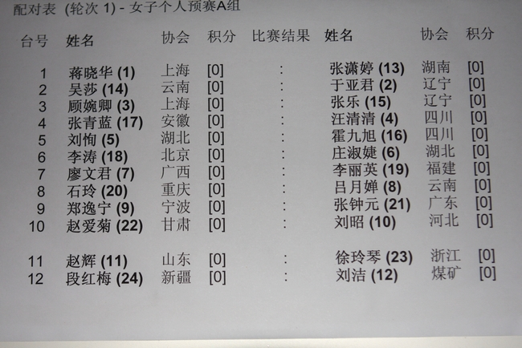
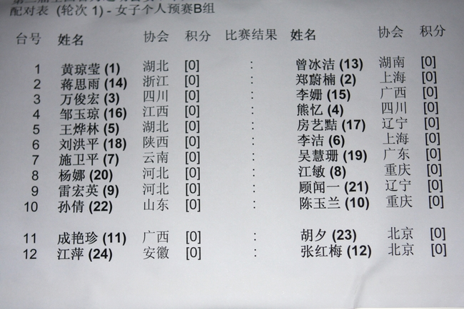
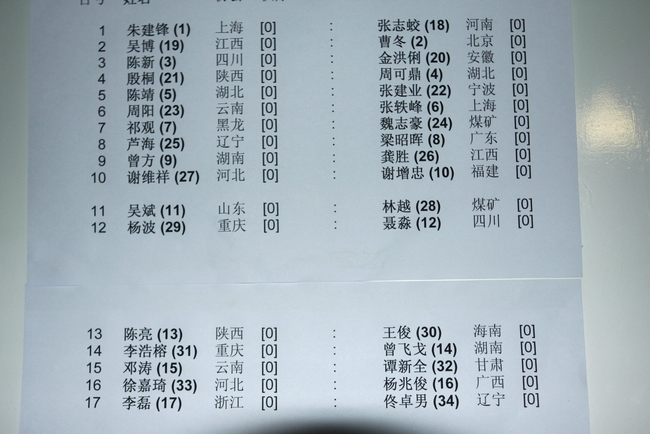
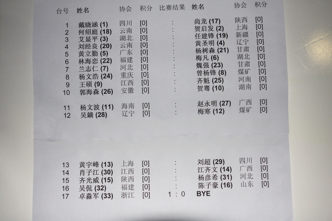

［此帖子已被 有志青年 在 2011-11-12 21:06:36 编辑过］
［ 有志青年 于 2011-11-12 21:07:49 时奖励此帖[金币加 100 威望加1］
［ 笑雨辰 于 2011-11-12 21:09:27 时花20金币送鲜花一朵］
［ 第五象限 于 2011-11-12 21:10:40 时花20金币送鲜花一朵］
［ 雨过云舒 于 2011-11-12 21:10:47 时花20金币送鲜花一朵］
狮子标题党呀，都在等呀都在等，等呀等
为什么没法添加图片？
引用：
原文由 有志青年 发表于 2011-11-12 20:55:31 :狮子标题党呀，都在等呀都在等，等呀等
引用：
原文由 有志青年 发表于 2011-11-12 20:55:31 :狮子标题党呀，都在等呀都在等，等呀等
引用：好复杂啊，图片太大，等我弄一下传上来，大家别急啊，⊙n⊙b汗
原文由 雨过云舒 发表于 2011-11-12 21:01:57 :
楼主，你这样做很不厚道啊～
谢谢狮子，已经搞定了，好多棋手在房间里等这个东西呀，信息社会，再到赛场外排队看这东西就有点……

试发一个漂亮的电子版：
台号 姓名 协会 积分 比赛结果 姓名 协会 积分
1 蒋晓华, (1) 上海 [0] : 张潇婷, (13) 湖南 [0]
2 吴莎, (14) 云南 [0] : 于亚君, (2) 辽宁 [0]
3 顾婉卿, (3) 上海 [0] : 张乐, (15) 辽宁 [0]
4 张青兰, (16) 安徽 [0] : 汪清清, (4) 四川 [0]
5 刘恂, (5) 湖北 [0] : 霍九旭, (17) 四川 [0]
6 李涛, (18) 北京 [0] : 庄淑婕, (6) 湖北 [0]
7 廖文君, (7) 广西 [0] : 李丽英, (19) 福建 [0]
8 石玲, (20) 重庆 [0] : 吕月婵, (8) 云南 [0]
9 郑逸宁, (9) 宁波 [0] : 张钟元, (21) 广东 [0]
10 赵爱菊, (22) 甘肃 [0] : 刘昭, (10) 河北 [0]
11 赵辉, (11) 山东 [0] : 徐玲琴, (23) 浙江 [0]
12 段红梅, (24) 新疆 [0] : 刘洁, (12) 煤矿 [0]
［此帖子已被 小丸.net 在 2011-11-12 22:03:19 编辑过］
7 廖文君, (7) 文本 [0]
 文本是哪个星球捏。。。
文本是哪个星球捏。。。
表示男子B组的牛人们抽的签很有型
 起了个大早
起了个大早